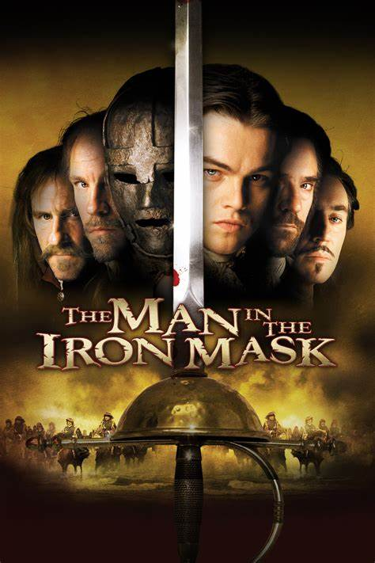

Movie 5
The Man in the Iron Mask
Rating: 6.5/10
Synopsis
In the story of France under King Louis XIV, the country is bankrupt due to his unpopular wars. The king's hedonistic luxury and seduction of women are portrayed through the Three Musketeers, who have retired from their roles. The king's son Raoul returns from the war and is enlisted in the musketeers, but is killed by Dutch cannons. Athos, the king's Captain of the Musketeers, seeks revenge and kills two musketeers before being overpowered. Louis invites Christine to the palace, where she sleeps with him. Aramis, the secret leader of the Jesuit order, plots to overthrow the king with the help of his old comrades. The three Musketeers sneak into an island prison and escape a mysterious prisoner, Philippe, who is the identical twin of King Louis. Aramis reveals that Philippe was sent away by his father to save France from dynastic warfare. Louis later discovered Philippe's existence and devised a way to keep him hidden using the iron mask. King Louis seduces Christine, who confesses to her love for Raoul. Angered, Louis forsakes Christine and abducts her. Athos, Porthos, and Aramis teach Philippe to act like royalty, abducting Louis during a fancy dancing ball. Philippe saves Christine's life when she accuses him of murdering Raoul. D'Artagnan orders the palace musketeers to be on full alert and escorts Philippe to the underground dock. D'Artagnan learns that Philippe is Louis' brother and pleads with Louis to spare his life. Louis refuses, but Philippe pleads for execution. Louis orders Philippe placed in the Bastille and hangs herself. Athos, Porthos, and Aramis, the Three Musketeers, break into the Bastille prison with Philippe. Louis prepares an ambush, but the guards' respect prevents them from overwhelming the four Musketeers. Philippe offers to give himself up in exchange for their lives, but D'Artagnan refuses, revealing that he is the twins' father and served Louis out of fatherly devotion. The four Musketeers and Philippe charge Louis' front line, stuning the soldiers into immobility. Louis stabs Philippe, but D'Artagnan reminds him that Louis is his brother. Philippe's mask is removed, allowing D'Artagnan to see his face one last time.